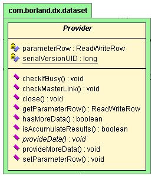

Ésta es una función de JBuilder Enterprise.
JBuilder utiliza diagramas UML para presentar código y buscar clases y paquetes. Los diagramas UML pueden ayudar a comprender rápidamente la estructura de un código desconocido, reconocer áreas especialmente complejas e incrementar la productividad mediante la rápida solución de los problemas.
JBuilder ofrece dos diagramas UML:
Para presentar un diagrama UML, compile el proyecto y haga doble clic en un archivo de código fuente o un paquete en el panel del proyecto. A continuación, seleccione la ficha UML de la parte inferior del Visualizador de aplicaciones.

Si desea más información, consulte:
Generación de aplicaciones con JBuilder Presentación de código con UML